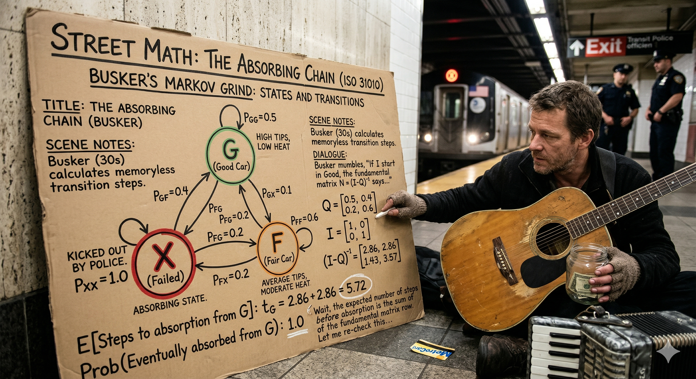

FADE IN: A New York City subway car, mid-morning. Half-empty. JEROME (40s, saxophone case, weathered hands, PhD dropout who chose music over academia) sits in a corner seat, counting crumpled bills. AISHA (20s, violin case, new to busking, conservatory student paying rent) sits across from him. AISHA How do you know which car to play in? I've been picking randomly and some days I make sixty bucks, some days I make six. JEROME (folding the bills) You're not picking randomly. You're picking BLINDLY. There's a difference. Random means you understand the probabilities and accept the variance. Blind means you don't know the probabilities at all. AISHA So what are the probabilities? JEROME That depends on the state of the car. And the state of the car is all that matters.
Jerome pulls a small notebook from his saxophone case. It's filled with tally marks and numbers. JEROME I've been tracking subway cars for three years. Every car I enter, I classify it into one of three states. He writes: JEROME (V.O.) State G (Good): Car is 40-70% full, mixed demographics, relaxed vibe, no headphones majority. Expected earnings: $15-25 per performance. State F (Fair): Car is either too empty (<30%) or too full (>80%), or the crowd is disengaged — headphones, sleeping, hostile. Expected earnings: $3-8 per performance. State X (Failed): Transit police present, or a competing performer, or an aggressive passenger situation. Expected earnings: $0, plus risk of citation or confrontation. AISHA So you just pick the Good cars? JEROME If only it were that simple. The problem is: cars change state. A Good car can become Fair. A Fair car can become Failed. And the transitions happen according to probabilities that I can measure.
JEROME This is a Markov Chain. A system that moves between discrete states, where the probability of the next state depends ONLY on the current state — not on the history. It's called the Memoryless Property. AISHA The car doesn't remember what it was before? JEROME Exactly. If I'm in a Good car right now, the probability of it being Good, Fair, or Failed at the next stop is fixed — regardless of whether it was Good for the last five stops or just became Good. He draws a 3x3 grid: JEROME (V.O.) Transition Matrix (per stop): To G To F To X From G: 0.60 0.30 0.10 From F: 0.20 0.50 0.30 From X: 0.05 0.35 0.60 JEROME (CONT'D) Read it like this: if I'm in a Good car, there's a 60% chance it stays Good at the next stop, 30% chance it drops to Fair, and 10% chance it goes to Failed. People get off, cops get on, the vibe shifts.
AISHA So if I'm in a Good car right now, what happens at the next stop? JEROME 60% chance it stays Good. You keep playing, keep earning. 30% chance it drops to Fair — crowd thins out or someone puts on a podcast at full volume. 10% chance it goes Failed — transit cop boards or someone starts hassling you. AISHA And if I'm in a Fair car? JEROME Only 20% chance it improves to Good. 50% it stays Fair. 30% it degrades to Failed. See the asymmetry? It's EASIER to go from Good to Fair than from Fair to Good. The system has a natural drift toward degradation. He taps the matrix. JEROME (CONT'D) That drift is critical. It means you can't just sit in a car and hope it gets better. The math says a Fair car is more likely to get worse than better. You need to actively manage your state — which means knowing when to MOVE.
JEROME Now here's where it gets powerful. I can predict not just one stop ahead, but multiple stops. To get the two-step transition matrix, I multiply the matrix by itself. He scribbles the calculation. JEROME (CONT'D) After two stops, starting from Good: probability of still being Good is about 42%. Fair: 33%. Failed: 25%. After three stops from Good: Good drops to about 33%. Fair: 33%. Failed: 34%. AISHA So after three stops, there's a one-in-three chance I'm dealing with cops? JEROME Starting from a Good car, yes. After three stops, the states are almost equally likely. The system is converging toward its steady state — the long-run distribution where the probabilities stop changing. AISHA What's the steady state? JEROME That's the big question. Let me show you.
JEROME The steady state — also called the stationary distribution — is where the system settles if you let it run long enough. No matter where you start, you end up at the same long-run probabilities. He writes a system of equations: JEROME (V.O.) πG = 0.60·πG + 0.20·πF + 0.05·πX πF = 0.30·πG + 0.50·πF + 0.35·πX πX = 0.10·πG + 0.30·πF + 0.60·πX πG + πF + πX = 1 JEROME (CONT'D) Solving this system... the steady state is approximately: πG = 0.22, πF = 0.36, πX = 0.42. AISHA (dismayed) 42% of the time, I'm in a Failed state? JEROME In the LONG RUN, if you just ride the train without strategy, you'll spend 22% of your time in Good cars, 36% in Fair cars, and 42% in Failed cars. The system's natural equilibrium is weighted toward failure. AISHA That's depressing. JEROME That's the baseline. But Markov Analysis doesn't just describe the system — it tells you how to BEAT it.
JEROME The steady state assumes you're passive — you stay in whatever car you're in and let the transitions happen. But what if you're ACTIVE? What if you change cars strategically? AISHA Like, get off and move to a different car? JEROME Exactly. My strategy: if I'm in a Good car, I stay and play. If I drop to Fair, I play one more stop — there's a 20% chance it recovers. If it's still Fair after one stop, I move. If I ever hit Failed, I move IMMEDIATELY. He recalculates. JEROME (CONT'D) With this strategy, I'm essentially resetting my state every time I move. When I enter a new car, I'm sampling from the train's overall distribution. About 35% of cars are Good at any given time, 40% Fair, 25% Failed. AISHA So by moving, you get better odds than the steady state? JEROME Much better. My active strategy keeps me in Good cars about 45% of the time instead of 22%. That more than doubles my expected earnings.
JEROME Let me put dollars on it. Passive strategy — ride the steady state: He calculates: JEROME (V.O.) E(passive) = 0.22 × $20 + 0.36 × $5 + 0.42 × $0 E(passive) = $4.40 + $1.80 + $0 = $6.20 per stop JEROME (CONT'D) Active strategy — move when Fair persists or Failed: JEROME (V.O.) E(active) = 0.45 × $20 + 0.35 × $5 + 0.20 × $0 E(active) = $9.00 + $1.75 + $0 = $10.75 per stop JEROME (CONT'D) That's $10.75 versus $6.20. Over a 20-stop session, that's $215 versus $124. The active strategy earns 73% more. AISHA Just from knowing when to move? JEROME Just from understanding the transition probabilities and acting on them instead of hoping. The math doesn't change the system. It changes YOUR behavior within the system. And that changes everything.
AISHA How long until I definitely get caught by transit police? Like, what's the expected number of stops before I hit Failed for the first time? JEROME That's called the Expected Time to Absorption — if we treat Failed as an absorbing state (once you're caught, you're done for the day). He modifies the matrix, removing transitions OUT of Failed. JEROME (CONT'D) Using the fundamental matrix of the absorbing chain... starting from Good, the expected number of stops before first hitting Failed is about 6.5. Starting from Fair, it's about 3.8. AISHA So if I start in a Good car, I've got about six or seven stops before trouble finds me? JEROME On average. Could be two, could be fifteen. But the expected value is 6.5. That's your planning horizon. If you're in a Good car, you've got roughly six stops of productive playing before the probability of a Failed state becomes dominant. AISHA So I should plan my set list for six stops. JEROME (grinning) Now you're thinking like a Markov analyst. Optimize for the expected window, not the best case.
The train pulls into a station. Jerome looks at the car — it's thinning out. Fair state. JEROME (standing) This car just went Fair. I'm moving. You coming? Aisha grabs her violin case and follows him to the next car. It's 60% full, mixed crowd, good energy. Good state. JEROME (CONT'D) (setting up his sax) ISO 31010, Section B.5.9. Markov Analysis. Engineers use it to predict when machines will break down. Epidemiologists use it to model disease progression. We use it to figure out which subway car to play saxophone in. AISHA (tuning her violin) Same math. JEROME Same math. Different stage. The system has states, the states have transitions, and the transitions have probabilities. Once you see that structure, you stop being a passenger in the system and start being a player. He lifts the saxophone to his lips. Aisha raises her bow. They lock eyes, nod, and begin playing a duet. The car fills with music. Passengers look up from their phones. Bills start appearing in the open cases. Good state. Six stops to make it count. FADE OUT. — END —